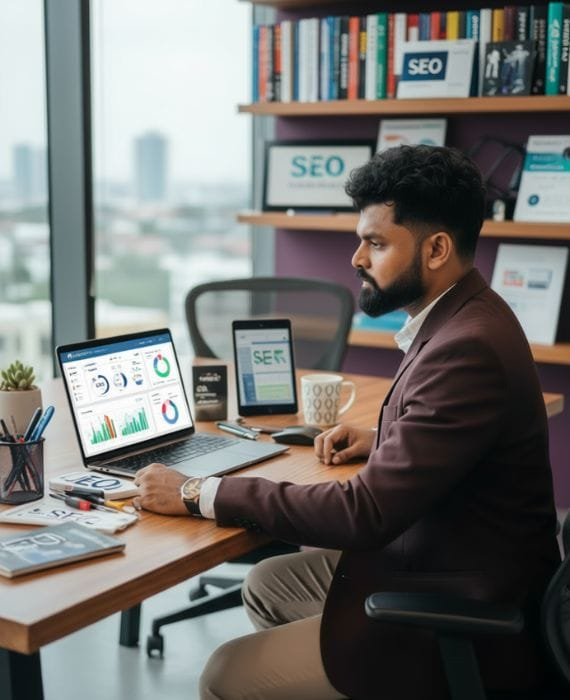

SEO Consultant in Galle
Search කරද්දී ඔයාටම හම්බුනා නේද එහෙනම් ඔයා ඉන්නේ හරිම තැන
(It means you have found the best SEO company in Sri Lanka)
Powered by Applantics (Pvt) Ltd
As an independent SEO Consultant serving Galle (a UNESCO World Heritage city on Sri Lanka's southern coast), I use 100% white-hat SEO techniques with deep keyword research, technical SEO improvements, and high-authority backlinks. As your trusted SEO Consultant Galle, I help businesses rank higher on Google and AI search engines for long-term growth. Looking for island-wide strategy? Visit our primary SEO Consultant Sri Lanka national hub.
Complete SEO & GEO Solutions for Businesses in Galle
Galle is built around the UNESCO World Heritage Galle Fort, a historic Dutch-fortified port that draws a steady flow of international tourists to Sri Lanka's southern coast. A large share of the search demand for Galle businesses comes from travellers researching hotels, tours, and restaurants before they even arrive in the country. As a professional SEO Consultant in Galle, I provide fully customized SEO solutions built around that tourism-driven search behaviour, with 100% white-hat techniques.
Search Engine Optimization (SEO)
On-page optimization, technical SEO, content strategy, site audits, and link building to increase your search visibility and organic traffic.
Learn More →Generative Engine Optimization (GEO)
Optimize for AI search engines like ChatGPT, Gemini, and Perplexity. Get your content visible in AI-generated search results beyond Google.
Learn More →Local SEO & Link Building
Boost visibility on Google Maps and local search. Earn authoritative, safe, and high-value backlinks that strengthen your domain authority.
Learn More →
Why Choose Me as Your SEO Consultant in Galle?
As a qualified engineer and an SEO Consultant based in Sri Lanka, I understand that Galle's economy revolves around its historic fort, its beaches, and the export trade that moves through the southern coast. Search intent here is split between international travellers planning a trip months in advance and local customers searching close to home. I offer fully customized SEO solutions built around both, not a generic template.
My strategies focus on long-term growth, not short-term tricks. I use 100% white-hat SEO techniques with deep keyword research, technical SEO improvements, and high-authority backlinks, including content written for the international, English-speaking audience that drives much of Galle's tourism search traffic. Learn about SEO services in Sri Lanka or explore AI SEO strategies for 2025.
Learn More About MeWhat Makes This SEO Consultant Galle Different?
Tourism in Galle is seasonal, with demand rising through the peak travel months, so search visibility needs to be in place well before visitors start planning their trip. As your dedicated SEO Consultant in Galle, I combine keyword research and competitor analysis for the hotel, tour, and hospitality trade with on-page and technical SEO, high-authority backlinks, and Google Maps optimization for Galle Fort and the surrounding area. Compare our approach with other SEO agencies in Sri Lanka or learn about choosing the right SEO specialist.
Years Experience
Happy Clients
White-hat SEO
Support Available
Proven SEO Strategies from Your SEO Consultant in Galle
As a trusted SEO Consultant in Galle, I provide comprehensive SEO solutions for hotels and guesthouses, tour and dive operators, restaurants, and export trading businesses along the southern coast. My approach focuses on sustainable, long-term results rather than quick fixes, tailored to Galle's mix of international tourism demand and local competition. Understand more about SEO timelines and SEO fundamentals to make informed decisions.
White-Hat SEO
Years Experience
Complete SEO Solutions from Your Expert SEO Consultant Galle
Deep Keyword Research & Analysis
From "things to do near Galle Fort" to export trade enquiries, I identify high-opportunity keyword targets that reflect how international tourists and local buyers actually search for Galle businesses.
Technical SEO Excellence
Site speed optimization, mobile responsiveness, schema markup, indexing fixes, and core web vitals to ensure Google visibility.
Monthly Reporting & Tracking
Transparent monthly reports with ranking improvements, traffic data, backlink analysis, and real growth insights you can track.
How Customers Search for Businesses in Galle
Galle is in the Southern Province. SEO here works best when it reflects the district's own towns, industries, and languages rather than a copy of a Colombo strategy.
Areas to Cover
Galle Fort, Unawatuna, Hikkaduwa, Ambalangoda, Koggala, Habaraduwa, Ahangama.
Key Local Industries
Boutique hotels and villas, surf and diving tourism, restaurants and cafes in the Fort, the Koggala export processing zone, cinnamon, and Ambalangoda's mask and handicraft trade.
How People Search
Tourism searches come mostly in English from overseas travellers planning trips (“boutique hotel Galle Fort”, “Unawatuna villa”, “surf lessons Hikkaduwa”), and reviews strongly influence clicks.
Local SEO Tip for Galle
Many visitors compare options on Google Maps before booking. A steady flow of detailed reviews that mention the location and service helps both map rankings and conversions. For the full process, read the local SEO guide and the Google Maps SEO guide, or browse the anonymized SEO case studies.
Get Your Website Ranking on Google with Expert SEO Consultant Galle
Travellers are already searching for hotels, tours, and restaurants in Galle before they land in Sri Lanka — don't let competitors capture that demand first. Partner with an SEO Consultant in Galle for professional SEO services tailored to the southern coast's tourism and trade economy. I offer transparent pricing and a clear strategy. Contact me for a free consultation.
Frequently Asked Questions – SEO Consultant in Galle
Common questions about hiring an SEO Consultant for businesses in Galle, Sri Lanka.
Who is the best SEO Consultant in Galle?
Buddhika S Weerasekara is an independent SEO Consultant serving Galle, with over 15 years of experience. He offers professional white-hat SEO services, technical optimization, and stronger search visibility for businesses.
What SEO services does Buddhika S Weerasekara offer in Sri Lanka?
Buddhika offers comprehensive SEO services including search engine optimization (SEO), generative engine optimization (GEO) for AI search engines, technical SEO audits, on-page optimization, content strategy, link building, and local SEO for Google Maps rankings.
What makes local SEO important for businesses in Galle?
Galle is a UNESCO World Heritage city on Sri Lanka's southern coast and one of the country's most visited tourism destinations, centred around the historic Galle Fort. Much of the search demand here comes from international travellers researching hotels, tours, and restaurants before they arrive, so SEO for Galle businesses needs to account for seasonal tourism patterns and searches from outside Sri Lanka.
Which types of Galle businesses benefit most from SEO?
Hotels, guesthouses and boutique villas, tour and dive operators, restaurants, and export trading businesses based in Galle benefit from SEO that targets both local searches and international tourist search behaviour.
How can I contact the SEO Consultant in Galle?
You can contact Buddhika S Weerasekara at +94-77-806-4714 or email admin@seoconsultantsrilanka.com for professional SEO consulting services in Sri Lanka.